{{ s.brief_heading }}
{% for para in s.brief_body %}{{ para }}
{% endfor %}
{{ s.eyebrow }}
{{ s.tagline }}
{{ s.subtitle }}
{{ para }}
{% endfor %}{{ faction.text }}
Mona is a fictional nation created specifically for the Model NASS simulation. It gives delegates a neutral but realistic arena to grapple with real tensions — without the noise of real-world political allegiances.
Model NASS itself was established under Mona's Civic Inclusion and Participatory Governance Reform Act, five years after a nationwide youth movement demanded a seat at the table. It is a formal youth legislative body with the power to submit advisory resolutions directly to the President and National Assembly.
The problems are fictional. The thinking required is entirely real. — Explore the world in Monapedia ↗
"{{ s.quote.text }}"
{{ s.quote.attribution }}
Model NASS is open to students and young professionals who are willing to engage seriously with complex, uncomfortable ideas.
{{ card.text }}
{{ s.cta_body }}
Register Now